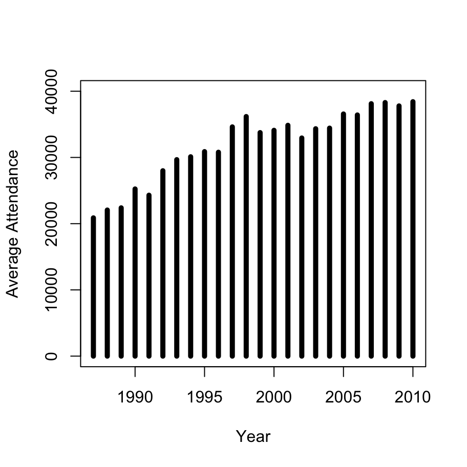
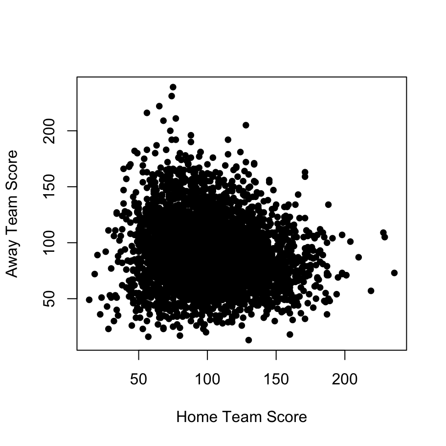

- Describing data
Out of every hundred people, those who always know better: fifty-two.
Unsure of every step: almost all the rest.
Ready to help, if it doesn’t take long: forty-nine.
Always good, because they cannot be otherwise: four – well, maybe five.
Able to admire without envy: eighteen.
Led to error by youth (which passes): sixty, plus or minus.
Those not to be messed with: four-and-forty.
Living in constant fear of someone or something: seventy-seven.
Capable of happiness: twenty-some-odd at most.
Harmless alone, turning savage in crowds: more than half, for sure.
Cruel when forced by circumstances: it’s better not to know, not even approximately.
Wise in hindsight: not many more than wise in foresight.
Getting nothing out of life except things: thirty (though I would like to be wrong).
Balled up in pain and without a flashlight in the dark: eighty-three, sooner or later.
Those who are just: quite a few, thirty-five.
But if it takes effort to understand: three.
Worthy of empathy: ninety-nine.
Mortal: one hundred out of one hundred – a figure that has never varied yet.
- Wislawa Szymborska, A Word on Statistics (translated from the Polish by Joanna Trzeciak)
In this chapter I’m going to provide a quick overview of how to perform common data analysis jobs using R. It’s essentially a brief coverage of descriptive statistics and a few standard inferential statistics (\(t\)-tests, etc). I won’t explain the logic of how the statistical tests work: there are lots of great stats textbooks out there for that. If you’re really desperate you can check out the Learning Statistics with R book that I wrote for teaching my intro stats class.
When writing my first ever set of statistics lectures back in 2011, I scraped a set of data from the web that contained some basic information about every Australian Football League (AFL) game played during the years 1987 to 2010. The data is stored in the afl data frame and saved in the afl24.Rdata file. We’ll use that data set throughout this chapter, so here it is:
load("./data/afl24.Rdata") # load data
head(afl) # show the first few rows## home.team away.team home.score away.score year round weekday day
## 1 North Melbourne Brisbane 104 137 1987 1 Fri 27
## 2 Western Bulldogs Essendon 62 121 1987 1 Sat 28
## 3 Carlton Hawthorn 104 149 1987 1 Sat 28
## 4 Collingwood Sydney 74 165 1987 1 Sat 28
## 5 Melbourne Fitzroy 128 89 1987 1 Sat 28
## 6 St Kilda Geelong 101 102 1987 1 Sat 28
## month is.final venue attendance
## 1 3 FALSE MCG 14096
## 2 3 FALSE Waverley Park 22550
## 3 3 FALSE Princes Park 19967
## 4 3 FALSE Victoria Park 17129
## 5 3 FALSE MCG 18012
## 6 3 FALSE Gold Coast Stadium 15867I’m also going to make use of a couple of different packages in this chapter, so I’ll load them now:
library(psych) # William Revelle's psychometrics package##
## Attaching package: 'psych'## The following objects are masked from 'package:ggplot2':
##
## %+%, alphalibrary(lsr) # my "learning statistics with R" package (badly in need of some updating!)
library(car) # nicer Anova function than the base packages## Loading required package: carData##
## Attaching package: 'car'## The following object is masked from 'package:psych':
##
## logit## The following object is masked from 'package:dplyr':
##
## recode## The following object is masked from 'package:purrr':
##
## some14.1 Descriptive statistics
14.1.1 Using summary
Let’s suppose all we want to do is get a quick overview of all the variables in the data frame. The summary function1 provides a very handy way of doing that, as you can see here:
summary(afl)## home.team away.team home.score
## Essendon : 289 Western Bulldogs: 293 Min. : 14.0
## Collingwood : 286 Carlton : 289 1st Qu.: 80.0
## Geelong : 285 Geelong : 283 Median : 99.0
## North Melbourne: 285 West Coast : 282 Mean :101.5
## West Coast : 284 Melbourne : 279 3rd Qu.:120.0
## Brisbane : 282 Hawthorn : 278 Max. :236.0
## (Other) :2585 (Other) :2592
## away.score year round weekday day
## Min. : 13.00 Min. :1987 Min. : 1.0 Mon: 98 Min. : 1.00
## 1st Qu.: 71.00 1st Qu.:1993 1st Qu.: 6.0 Tue: 6 1st Qu.: 8.00
## Median : 89.00 Median :1999 Median :12.0 Wed: 6 Median :16.00
## Mean : 91.12 Mean :1999 Mean :12.2 Thu: 25 Mean :15.86
## 3rd Qu.:108.00 3rd Qu.:2005 3rd Qu.:18.0 Fri: 514 3rd Qu.:24.00
## Max. :239.00 Max. :2010 Max. :25.0 Sat:2226 Max. :31.00
## Sun:1421
## month is.final venue
## Min. : 3.000 Mode :logical MCG :1144
## 1st Qu.: 5.000 FALSE:4096 Etihad Stadium : 512
## Median : 6.000 TRUE :200 AAMI Stadium : 391
## Mean : 6.056 Patersons Stadium: 382
## 3rd Qu.: 7.000 Waverley Park : 341
## Max. :10.000 Princes Park : 316
## (Other) :1210
## attendance
## Min. : 3059
## 1st Qu.: 20401
## Median : 29210
## Mean : 32095
## 3rd Qu.: 40265
## Max. :100016
## The output here is giving a sensible summary of each of the variables. To look at any one of these in a little more detail, let’s start by considering the “weekday” variable, afl$weekday. This is a categorical variable (i.e., a factor in R) and so when we summarise that variable on its own, the output is a frequency table:
summary( afl$weekday )## Mon Tue Wed Thu Fri Sat Sun
## 98 6 6 25 514 2226 1421So there were a total of 98 games played on a Monday over this time period, 6 games played on a Tuesday, and so on. If we feed it a numeric variable, like afl$attendance we get a set of numbers describing the overall distribution:2
summary( afl$attendance )## Min. 1st Qu. Median Mean 3rd Qu. Max.
## 3059 20401 29210 32095 40265 100016So the output here gives you the range: minimum attendance was 3059 and the maximum was 100016. The mean attendance at an AFL game was 32095, whereas the median was a little smaller at 29209. Finally, it also gives you the interquartile range, which runs from 20400 to 40265. A more detailed view could be generated using the hist function to draw a histogram, as discussed in the graphics chapter: 
14.1.2 Using describe
The psych package contains a handy function called describe that provides some additional summary statistics that are commonly reported in psychology. However, the measures that it reports are only really sensible for numeric variables (e.g., what exactly would the “mean” of afl$venue be?) so the output looks a little weird when the data set contains non-numeric variables. So to produce a tidy output, it’s handy to do something like this:
numeric.vars <- sapply(afl, is.numeric) # I'll explain "sapply" later!
describe( afl[,numeric.vars] ) # only "describe" the numeric vars...## vars n mean sd median trimmed mad min
## home.score 1 4296 101.51 29.66 99.0 100.27 29.65 14
## away.score 2 4296 91.12 29.03 89.0 89.60 28.17 13
## year 3 4296 1998.77 6.87 1999.0 1998.83 8.90 1987
## round 4 4296 12.20 6.72 12.0 12.19 8.90 1
## day 5 4296 15.86 9.02 16.0 15.87 11.86 1
## month 6 4296 6.06 1.66 6.0 6.05 1.48 3
## attendance 7 4296 32095.22 16645.75 29209.5 30224.59 14669.59 3059
## max range skew kurtosis se
## home.score 236 222 0.41 0.22 0.45
## away.score 239 226 0.57 0.67 0.44
## year 2010 23 -0.05 -1.17 0.10
## round 25 24 0.00 -1.19 0.10
## day 31 30 0.01 -1.23 0.14
## month 10 7 0.00 -1.09 0.03
## attendance 100016 96957 1.16 1.70 253.96The package also contains a describeBy function that allows you to report the descriptive statistics by group. So, for instance let’s suppose I wanted to calculate statistics separately for home and away games (i.e., afl$is.final == FALSE) and finals cames (i.e, afl$is.final == TRUE) we could use this command:
describeBy(
x = afl[,numeric.vars],
group = afl$is.final
)##
## Descriptive statistics by group
## group: FALSE
## vars n mean sd median trimmed mad min
## home.score 1 4096 101.21 29.73 99.0 99.95 29.65 14
## away.score 2 4096 91.86 29.20 89.0 90.40 28.17 13
## year 3 4096 1998.75 6.88 1999.0 1998.80 8.90 1987
## round 4 4096 11.66 6.41 12.0 11.65 8.90 1
## day 5 4096 15.99 9.07 16.0 16.02 11.86 1
## month 6 4096 5.91 1.56 6.0 5.93 1.48 3
## attendance 7 4096 30681.18 15044.02 28355.5 29278.76 13957.20 3059
## max range skew kurtosis se
## home.score 236 222 0.42 0.24 0.46
## away.score 239 226 0.55 0.64 0.46
## year 2010 23 -0.05 -1.18 0.11
## round 24 23 0.00 -1.19 0.10
## day 31 30 -0.02 -1.24 0.14
## month 9 6 -0.04 -1.15 0.02
## attendance 94825 91766 1.03 1.48 235.06
## --------------------------------------------------------
## group: TRUE
## vars n mean sd median trimmed mad min
## home.score 1 200 107.69 27.42 108.5 106.59 28.91 56
## away.score 2 200 75.99 20.04 73.0 75.16 19.27 34
## year 3 200 1999.31 6.71 1999.5 1999.43 8.15 1987
## round 4 200 23.23 0.64 23.0 23.04 0.00 23
## day 5 200 13.24 7.61 12.0 12.73 8.90 1
## month 6 200 8.97 0.23 9.0 9.00 0.00 8
## attendance 7 200 61054.95 20950.88 61106.5 60682.86 25517.03 19127
## max range skew kurtosis se
## home.score 198 142 0.32 -0.28 1.94
## away.score 164 130 0.69 1.38 1.42
## year 2010 23 -0.11 -1.12 0.47
## round 25 2 2.40 3.76 0.05
## day 30 29 0.48 -0.89 0.54
## month 10 2 -1.64 14.65 0.02
## attendance 100016 80889 0.12 -1.04 1481.45This provides handy information: the average attendance for a home and away game was 30681 whereas for a finals match the average attendance was 61054.
14.1.3 Mean and median
Introductory stats textbooks usually suggest that we describe the central tendency of a variable in terms of its arithmetic mean (i.e., the average value), the median (i.e., the middle value) or sometimes the mode (i.e., the most frequently occurring value). The mean and median are usually applied to numeric variables, whereas the mode is generally more appropriate for categorical variables. I’ll talk about the mode later.
To calculate the mean or median of a variable, R supplies the mean and median functions. It’s also worth noting that you can calculate the trimmed mean (e.g., 10% trimmed mean is the mean value after removing the highest 10% and lowest values 10% of the data) by specifying the trim argument to the mean function. Here’s a few examples:
mean( afl$home.score ) # mean score by the home team## [1] 101.5084mean( afl$home.score, trim = 0.1 ) # 10% trimmed mean## [1] 100.2714mean( afl$home.score, trim = 0.5 ) # 50% trimmed mean...## [1] 99median( afl$home.score ) # ... median *is* the 50% trimmed mean## [1] 9914.1.4 Standard deviation and quantiles
To calculate the spread of a variable we often describe the standard deviation or report various quantiles of a distribution. The sd function will compute standard deviations for you…
sd( afl$home.score ) # standard deviation## [1] 29.65969var( afl$home.score ) # variance, just in case you need this!## [1] 879.6973For quantiles, there are a number of specific functions that calculate “special” quantiles (e.g., the interquartile range is IQR and the range is range), but for the most part I think it makes sense to work with the quantile function that can compute any quantiles you like. Here are some examples:
quantile(
x = afl$home.score,
probs = c(.25, .75) # interquartile range
)## 25% 75%
## 80 120quantile(
x = afl$home.score,
probs = c(0, 1) # the range
)## 0% 100%
## 14 236quantile(
x = afl$home.score,
probs = c(.5) # the median
)## 50%
## 99Conventiently, the default value of probs is to compute all five of those quantiles so the default behaviour is very sensible:
quantile( afl$home.score )## 0% 25% 50% 75% 100%
## 14 80 99 120 23614.1.5 Missing data
Something to note is that the mean function (and most of the other functions used for descriptive statistics) is a little fragile when given missing data. If you want to ignore missing values in a data set, you have to explicitly tell these functions to do so. Most of the time the name of the argument to do this is na.rm. For example:
age <- c(30, 22, 24, NA) # eek, one person didn't give their age
mean(age) # this doesn't produce an answer!## [1] NAmean(age, na.rm = TRUE) # ignore the missing value & average the others## [1] 25.3333314.1.6 Tabulating data
When dealing with categorical variables, it’s convenient to construct a frequency table. The table function3 will do this nicely for us. For instance:
table( afl$home.team )##
## Adelaide Brisbane Carlton Collingwood
## 235 282 266 286
## Essendon Fitzroy Fremantle Geelong
## 289 100 179 285
## Hawthorn Melbourne North Melbourne Port Adelaide
## 279 278 285 164
## Richmond St Kilda Sydney West Coast
## 267 279 277 284
## Western Bulldogs
## 261The output of this function, incidentally is an R table object, an we can calculate the sample mode by finding the largest value in this table. Just to make this a little prettier for us, let’s define a custom function:
modal <- function(x) {
f <- table(x) # the frequency table
m <- f == max(f) # which cases are equal to the maximum frequency
modes <- f[m] # return all these cases
return(modes)
}Here’s what happens when we apply that to the afl$home.team variable:
modal( afl$home.team )## Essendon
## 289So Essendon played more home games than anyone else over this time frame. One reason that it can be useful to use a function like the modal one we just wrote is that it’s robust in the face of ties:
eyes <- c("blue","blue","brown", "brown", "green") # this has two modes!
modal(eyes) # this gives a sensible answer## x
## blue brown
## 2 214.1.7 Cross tabulations
Sometimes it is useful to cross tabulate two categorical variables. This is very easy to do with the table function, simply by feeding two categorical variables as the input! Let’s suppose I wanted to count the number of times each team played a home game on each day of the week. Here’s how I would do that:
table(afl$home.team, afl$weekday)##
## Mon Tue Wed Thu Fri Sat Sun
## Adelaide 1 0 0 0 26 94 114
## Brisbane 2 0 0 5 12 132 131
## Carlton 4 1 1 3 16 179 62
## Collingwood 12 3 0 3 46 167 55
## Essendon 6 0 3 4 52 158 66
## Fitzroy 4 0 0 0 2 84 10
## Fremantle 1 1 0 0 19 66 92
## Geelong 7 0 0 1 13 185 79
## Hawthorn 11 0 0 0 16 189 63
## Melbourne 22 0 1 0 28 140 87
## North Melbourne 6 0 0 3 84 123 69
## Port Adelaide 1 0 0 1 15 78 69
## Richmond 8 1 1 3 48 138 68
## St Kilda 7 0 0 1 29 174 68
## Sydney 0 0 0 0 31 85 161
## West Coast 1 0 0 1 51 93 138
## Western Bulldogs 5 0 0 0 26 141 89Note that you can add tables to one another. So if I wasn’t interested in home games specifically, I could do this:
home.day <- table(afl$home.team, afl$weekday)
away.day <- table(afl$away.team, afl$weekday)
print( home.day + away.day ) ##
## Mon Tue Wed Thu Fri Sat Sun
## Adelaide 4 0 0 0 54 209 197
## Brisbane 5 1 0 7 37 309 194
## Carlton 14 1 1 8 54 314 163
## Collingwood 35 3 2 8 94 292 122
## Essendon 15 4 3 7 110 285 136
## Fitzroy 5 0 1 0 18 151 45
## Fremantle 3 1 0 0 29 154 171
## Geelong 13 0 1 2 57 325 170
## Hawthorn 13 1 0 0 53 335 155
## Melbourne 30 0 1 2 55 275 194
## North Melbourne 10 0 0 3 114 268 163
## Port Adelaide 1 0 0 2 22 154 146
## Richmond 17 1 2 5 80 270 159
## St Kilda 13 0 0 4 68 314 155
## Sydney 6 0 0 1 44 260 242
## West Coast 4 0 0 1 79 248 234
## Western Bulldogs 8 0 1 0 60 289 196Finally, you can construct three way tables or even higher order tables simply by passing more variable to the table function, though the output rapidly becomes hard to read!
14.1.8 Aggregating by group
A common task in data analysis is to compute (say) the average value of attendance by year. I mentioned one way to do this earlier with the describeBy function, but another rather more flexible way is to use aggregate. Here’s how it works:
att.by.year <- aggregate(
formula = attendance ~ year, # we want to look at "attendance" broken down by "year"
data = afl, # the data are stored in the afl data frame
FUN = mean # the thing we want to compute is the mean
)
att.by.year## year attendance
## 1 1987 20876.48
## 2 1988 22055.49
## 3 1989 22386.39
## 4 1990 25238.42
## 5 1991 24295.84
## 6 1992 27989.91
## 7 1993 29665.54
## 8 1994 30099.99
## 9 1995 30879.42
## 10 1996 30783.36
## 11 1997 34610.79
## 12 1998 36172.42
## 13 1999 33749.11
## 14 2000 34093.91
## 15 2001 34851.68
## 16 2002 32935.06
## 17 2003 34333.27
## 18 2004 34423.23
## 19 2005 36561.36
## 20 2006 36412.08
## 21 2007 38113.22
## 22 2008 38286.21
## 23 2009 37776.42
## 24 2010 38416.60That does look like quite the upward trend, which becomes more obvious when we plot the data:
plot(
x = att.by.year$year,
y = att.by.year$attendance,
xlab = "Year",
ylab = "Average Attendance",
type = "h",
lwd = 5,
ylim = c(0,40000),
main = ""
)
14.1.9 Correlations
The cor function in R is a flexible tool for calculating correlations between numeric variables. If I want to calculate the correlation between the score of the home team and the score of the away team, for instance, all I do is pass both variables to the cor function:
cor( afl$home.score, afl$away.score )## [1] -0.1413139There’s not much of a relationship between them, as this scatterplot illustrates:

By default, the cor function computes the Pearson correlation between variables (i.e., default `method = “pearson”), but it’s straightforward to compute Spearman rank order correlations:
cor(
x = afl$home.score,
y = afl$away.score,
method = "spearman"
)## [1] -0.1406248The cor function can compute pairwise correlations between all variables in a data frame, but it only works if all the variables are numeric. Because the afl data has many non-numeric variables, this doesn’t work:
cor(afl)## Error in cor(afl): 'x' must be numericHowever, if you recall from earlier we computed a numeric.vars vector that indicates which ones are numeric, this version does work:
cor(afl[,numeric.vars])## home.score away.score year round day
## home.score 1.000000000 -0.141313940 -0.104550513 0.01010089 -0.013457444
## away.score -0.141313940 1.000000000 -0.067866080 -0.06933484 0.004972815
## year -0.104550513 -0.067866080 1.000000000 -0.01920264 -0.005481860
## round 0.010100891 -0.069334835 -0.019202639 1.00000000 0.039020639
## day -0.013457444 0.004972815 -0.005481860 0.03902064 1.000000000
## month 0.005953638 -0.078376198 -0.007751945 0.97659948 -0.137472441
## attendance -0.025008919 -0.025772821 0.296775676 0.10612028 0.014380434
## month attendance
## home.score 0.005953638 -0.02500892
## away.score -0.078376198 -0.02577282
## year -0.007751945 0.29677568
## round 0.976599482 0.10612028
## day -0.137472441 0.01438043
## month 1.000000000 0.11568915
## attendance 0.115689152 1.00000000As an aside, if you don’t like seeing so many digits in the output, you can print out a nicer summary like this:
correlations <- cor(afl[,numeric.vars])
print(correlations, digits = 2)## home.score away.score year round day month attendance
## home.score 1.000 -0.141 -0.1046 0.010 -0.0135 0.0060 -0.025
## away.score -0.141 1.000 -0.0679 -0.069 0.0050 -0.0784 -0.026
## year -0.105 -0.068 1.0000 -0.019 -0.0055 -0.0078 0.297
## round 0.010 -0.069 -0.0192 1.000 0.0390 0.9766 0.106
## day -0.013 0.005 -0.0055 0.039 1.0000 -0.1375 0.014
## month 0.006 -0.078 -0.0078 0.977 -0.1375 1.0000 0.116
## attendance -0.025 -0.026 0.2968 0.106 0.0144 0.1157 1.00014.1.10 Computing new variables
Finally, one thing to note is that you can make your analysis more flexible by adding new variables to your data frame. For instance, suppose I’m not actually interested in the correlation between home team and away team, but rather want to look at the correlation between the winning score and the losing score (i.e., is there such a thing as a “high scoring game”?). This is where it can be very handy to have a good grasp of the data manipulation tools in R. Here’s how we might compute the winning and losing scores using the apply function:
afl$winning.score <- apply(
X = afl[, c("home.score","away.score")], # the home and away scores
MARGIN = 1, # "retain" the first dimension
FUN = max # max along the other dimension
)
afl$losing.score <- apply(
X = afl[, c("home.score","away.score")], # the home and away scores
MARGIN = 1, # "retain" the first dimension
FUN = min # min along the other dimension
)
head(afl)## home.team away.team home.score away.score year round weekday day
## 1 North Melbourne Brisbane 104 137 1987 1 Fri 27
## 2 Western Bulldogs Essendon 62 121 1987 1 Sat 28
## 3 Carlton Hawthorn 104 149 1987 1 Sat 28
## 4 Collingwood Sydney 74 165 1987 1 Sat 28
## 5 Melbourne Fitzroy 128 89 1987 1 Sat 28
## 6 St Kilda Geelong 101 102 1987 1 Sat 28
## month is.final venue attendance winning.score losing.score
## 1 3 FALSE MCG 14096 137 104
## 2 3 FALSE Waverley Park 22550 121 62
## 3 3 FALSE Princes Park 19967 149 104
## 4 3 FALSE Victoria Park 17129 165 74
## 5 3 FALSE MCG 18012 128 89
## 6 3 FALSE Gold Coast Stadium 15867 102 101There are a lot of really nice data manipulation functions in R, particularly in the various packages that make up the tidyverse (see here for information). In the meantime, let’s correlate our new variables:
cor(afl$winning.score, afl$losing.score)## [1] 0.3313516So there is a relationship between the two, but it’s only modest. Here’s the scatterplot:

Note: like
printandplot,summaryis a generic function and does rather different things depending on what kind of input you give it↩Just FYI: If we summarise a logical variable using a command like
summary(afl$is.final)we get something very much like a frequency table. For a character variable thesummaryfunction doesn’t work very well, so you’d need to explicitly tell R to treat the variable as a factor using a command likesummary(as.factor(myvariable))↩see also the
xtabsfunction↩